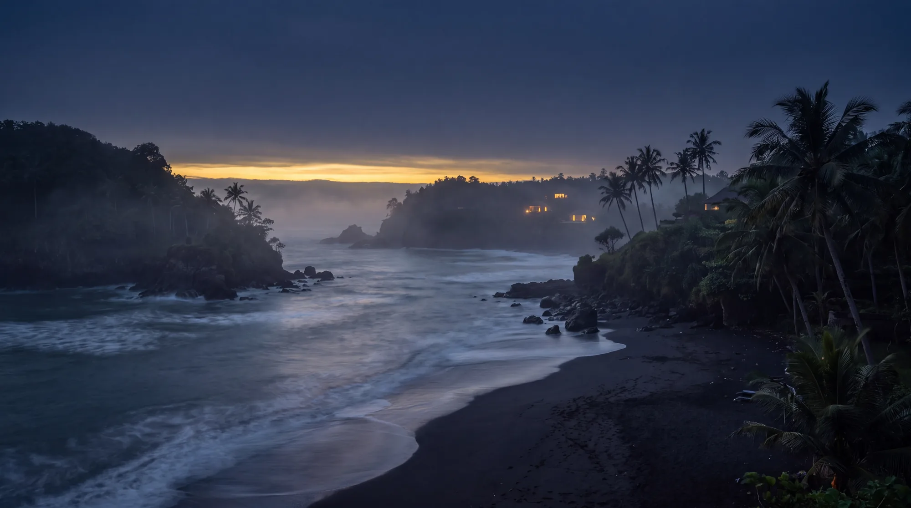

Studio · Bali
Every villa deserves a film.
Most never get one.
Because film crews don't scale.
Photos do.
So we made a studio that works from photographs.
The studio
Two people in Bali, working everywhere.
Veranda Films was founded in 2026 in Canggu, Bali, by Lucas and Tobias. We had watched hundreds of villas with good photographs and no film, because a crew never made sense for one property, and made even less sense for a hundred.
So we built the method around the photos. Each photograph becomes a slow camera move. Thirteen of them are cut to music, graded as one piece, and framed for three formats. Nothing is added to the property. Nothing is invented. The pool is the pool.
We work from Bali for properties in Indonesia, Thailand, Vietnam, the Philippines, Sri Lanka, the Maldives, Mexico, Costa Rica, the United States and beyond. We reply within one working day, in English, on Bali time.
- Founded
- 2026
- Based
- Canggu · Bali
- Time zone
- UTC+8
- Site visits
- 0

How the method works
- 01 PhotoYour existing listing photos, twelve or more.
- 02 Camera moveEach photo becomes a slow, single shot.
- 03 CutThirteen shots, cut to licensed music.
- 04 GradeOne color grade across the whole film.
- 05 Three formats16:9, 9:16 and 4:5, reframed by hand.
What to expect
From photos in to film out, day by day.
Half up front, half on delivery. Two rounds of changes included. The film is yours outright.
-
Day 0
Photos in
You send a folder, a Drive link or the listing URL. We confirm the material works and send the first invoice for half.
-
Day 1
Shot list
We pick thirteen photos and plan the camera moves. You hear from us if we need anything else.
-
Day 2 to 3
First cut
Every shot is generated, cut to music and graded. You receive a link to the first cut.
-
Day 3 to 5
Your notes
Two rounds of changes are included. Most films need one.
-
Within a week
Delivery
Three formats, the second invoice, and the film is yours outright.
-
Portfolios
Delivered in batches
We make the first one, you approve it, then we run the rest at the agreed pace.
Questions
The four questions we hear most.
The movement is generated from your own photographs. It is your property in every frame — nothing invented, nothing added, no rooms that do not exist. That is exactly why we can deliver within a week without anyone walking through the building. We never present it as drone footage, and we ask that you do not either.
Good. That is what makes this work. You paid for the hard part; this turns it into something that moves. The better the photos, the better the film.
Yes, and that is the part we are best at. Nobody sends a film crew to forty properties. We make the first one, you approve it, then we run the rest in batches with a per-property rate that drops with volume.
You do, outright, for any use — your website, your listings, your ads, your socials. We ask permission before showing it in our own portfolio, and we accept no as an answer.
More questions on the home page, or ask us directly.
Your property, in 30 seconds
Send the photos. We do the rest.
Within a week you have a film in three formats. €100 while we build our showreel, regular €399.